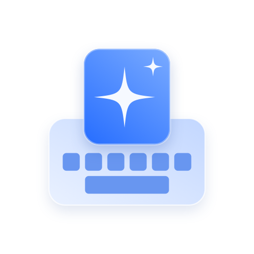
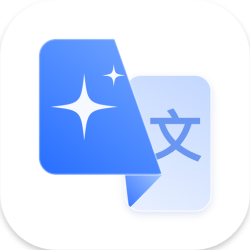

Android 输入法
拼音 + 英文输入法
- 工具栏里直接润色、翻译和 AI 语音输入
- 模糊音、联想、自适应触控
- 需要 Android 16 及以上
在你正在打字的地方直接完成：聊天、邮件、表单、评论框都可以。
改顺语句、错字和标点，保留原意。口语化的草稿也能变得清楚得体。
设一次目标语言，随时在 EN ▾ 上切换。按母语者的习惯来写，不是生硬直译。
按住空格说话。中文模式整理成通顺的文字，EN 模式直接翻译。（Android）
用你自己的 API Key，文字从你的设备直接发给 AI 服务商。没有中转服务器，也不用注册账号。
Mac 和 Windows 版常驻菜单栏或托盘，在任何软件里都能用。
选中文字，旁边会弹出小胶囊；也可以用快捷键：润色 ⌘⌥R / Ctrl+Alt+R，翻译 ⌘⌥T / Ctrl+Alt+T，快捷键可在设置里修改。
免费使用。更新时直接覆盖安装，设置都会保留。


暂无 iPhone 版：iOS 对第三方输入法的限制较多，无法实现完整的润色和翻译功能。
ZnKeyboard 使用你自己的 AI Key。推荐 Google Gemini：有免费额度，一分钟就能申请好。
在上方下载对应版本。Android 安装后还要在系统里启用 ZnKeyboard 输入法，App 首页会引导你完成。
登录 Google AI Studio，点「Create API key」创建一个 Key，然后复制。
在 设置 → AI 与语音 里粘贴 Key。看到 API Key 可用 就会自动开启 AI 润色与翻译。
xattr -dr com.apple.quarantine /Applications/ZnKeyboard.app